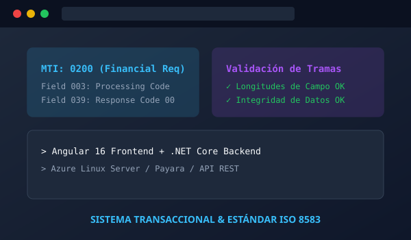

Sistema Transaccional Financiero (ISO 8583)
Desarrollo de módulos e interfaces web con Angular 16 para armado, lectura y validación de tramas financieras bajo el estándar internacional ISO 8583. Integración con backend en .NET / ASP.NET Core, soporte productivo y despliegue en Azure con servidores Linux y Payara.
Angular 16
TypeScript
ISO 8583
.NET Core
Azure / Linux